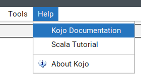
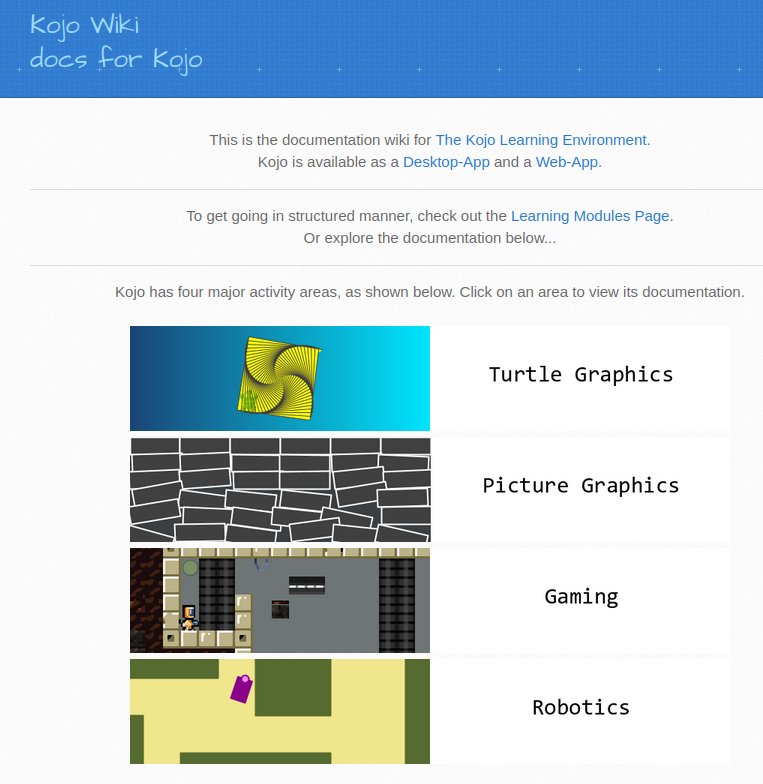
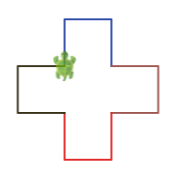
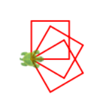
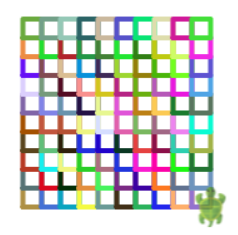

Die Kojo-Dokumentation hilft dir, neue Befehle zu verstehen und eigene Ideen zu bauen. Außerdem findest du dort viele neue Herausforderungen.
Folgendermaßen kannst Du die Dokumentation von Kojo öffnen:

Visit the Kojo Docs site

Folgende Aufgaben beziehen sich auf das Kojo-Buch zu dem man auch über Turtle Graphics -> Getting Started -> Getting Started kommt:
Suche im Getting-Started-Buch auf Seite 7 die Herausforderung mit dem bunten Kreuz und wähle die richtigen Befehle anstatt der drei Fragezeichen “???”. Vergleiche mit diesem Bild:

Wenn du die Stelle gefunden hast, probiere die Aufgabe in Kojo aus.
Suche im Buch auf Seite 14 die Aufgabe, in der eine
eigene Funktion square() verwendet wird und löse sie.
Zeichne damit drei Quadrate.
Wichtig:
def wird eine Funktion
definiert.def square() definiert eine Funktion, die man danach
mit square() aufrufen kann{ ... }.Beispielbild:

Wenn du fertig bist, gehe auf Seite 15 und probiere die nächste Herausforderung:
